An atom is the smallest unit of ordinary matter that forms a chemical element. Every solid, liquid, gas, and plasma is composed of neutral or ionized atoms.
Every atom is composed of a nucleus and one or more electrons bound to the nucleus. The nucleus is made of one or more protons and a number of neutrons.
The protons have a positive electric charge, the electrons have a negative electric charge, and the neutrons have no electric charge. If the number of protons and electrons are equal, then the atom is electrically neutral. If an atom has more or fewer electrons than protons, then it has an overall negative or positive charge, respectively – such atoms are called ions.
The electrons of an atom are attracted to the protons in an atomic nucleus by the electromagnetic force. The protons and neutrons in the nucleus are attracted to each other by the nuclear force. This force is usually stronger than the electromagnetic force that repels the positively charged protons from one another. Under certain circumstances, the repelling electromagnetic force becomes stronger than the nuclear force. In this case, the nucleus splits and leaves behind different elements. This is a form of nuclear decay.
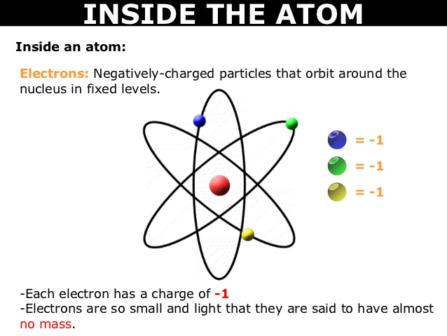Atomic structure refers to the structure of an atom comprising a nucleus (centre) in which the protons (positively charged) and neutrons (neutral) are present. The negatively charged particles called electrons revolve around the centre of the nucleus.
The protons and neutrons make up the nucleus of the atom, which is surrounded by the electrons belonging to the atom. The atomic number of an element describes the total number of protons in its nucleus.
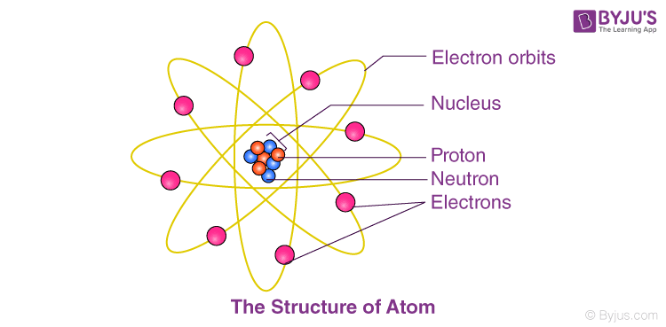Neutral atoms have equal numbers of protons and electrons. However, atoms may gain or lose electrons in order to increase their stability and the resulting charged entity is called an ion.
Atoms of different elements have different atomic structures because they contain different numbers of protons and electrons. This is the reason for the unique characteristics of different elements.
Dalton’s atomic theory was a scientific theory on the nature of matter put forward by the English physicist and chemist John Dalton in the year 1808. It stated that all matter was made up of small, indivisible particles known as ‘atoms’.
All substances, according to Dalton’s atomic theory, are made up of atoms, which are indivisible and indestructible building units. While an element’s atoms were all the same size and mass, various elements possessed atoms of varying sizes and masses.
The postulates and limitations of Dalton’s atomic theory are listed below.
The law of conservation of mass states that the total mass present before a chemical reaction is the same as the total mass present after the chemical reaction; in other words, mass is conserved. The law of conservation of mass was formulated by Antoine Lavoisier (1743-1794) as a result of his combustion experiment, in which he observed that the mass of his original substance—a glass vessel, tin, and air—was equal to the mass of the produced substance—the glass vessel, “tin calx”, and the remaining air.
Historically, this was a difficult concept for scientists to grasp. If this law was true, then how could a large piece of wood be reduced to a small pile of ashes? The wood clearly has a greater mass than the ashes. From this observation scientists concluded that mass had been lost. However, the illustration below shows that the burning of word does follow the law of conservation of mass. Scientists did not take into account the gases that play a critical role in this reaction.
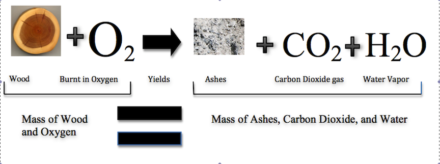Joseph Proust (1754-1826) formulated the law of constant composition (also called the law of definite proportions). This law states that if a compound is broken down into its constituent elements, the masses of the constituents will always have the same proportions, regardless of the quantity or source of the original substance. Joseph Proust based this law primarily on his experiments with basic copper carbonate. The illustration below depicts this law; 31 grams of H2O and 8 grams of H2O are made up of the same percent of hydrogen and oxygen.
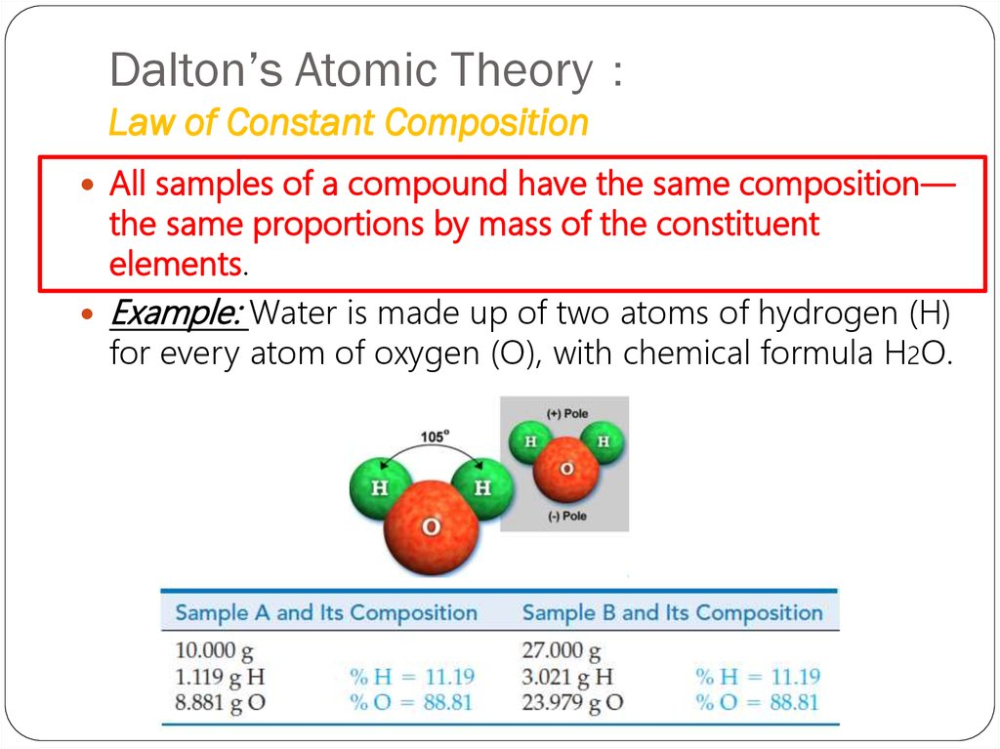The law of multiple proportions, also known as Dalton’s law, was proposed by the English chemist and meteorologist John Dalton in his 1804 work, A New System of Chemical Philosophy. It is a rule of stoichiometry. The law, which was based on Dalton’s observations of the reactions of atmospheric gases, states that when elements form compounds, the proportions of the elements in those chemical compounds can be expressed in small whole number ratios.
The law of multiple proportions states that if two elements form more than one compound between them, the masses of one element combined with a fixed mass of the second element form in ratios of small integers.
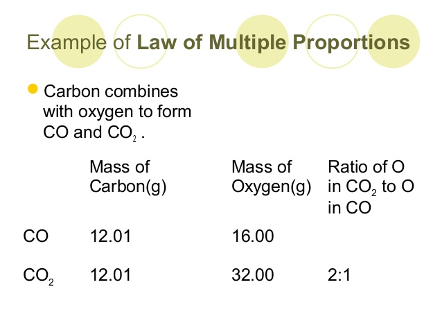 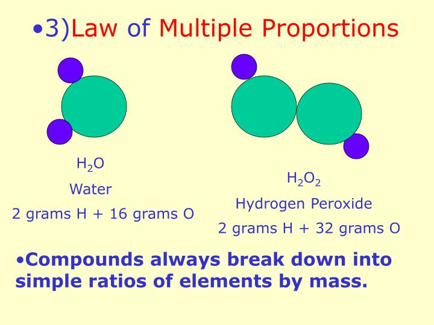In his theory of atomic structure and composition, Dalton presented the concept that all matter was composed of different combinations of atoms, which are the indivisible building blocks of matter. Dalton’s law of multiple proportions is part of the basis for modern atomic theory, along with Joseph Proust’s law of definite composition (which states that compounds are formed by defined mass ratios of reacting elements) and the law of conservation of mass that was proposed by Antoine Lavoisier. These laws paved the way for our current understanding of atomic structure and composition, including concepts like molecular or chemical formulas.
During the 1880s and ’90s scientists searched cathode rays for the carrier of the electrical properties in matter. Their work culminated in the discovery by English physicist J.J. Thomson of the electron in 1897. The existence of the electron showed that the 2,000-year-old conception of the atom as a homogeneous particle was wrong and that in fact the atom has a complex structure.
Cathode-ray studies began in 1854 when Heinrich Geissler, a glassblower and technical assistant to German physicist Julius Plücker, improved the vacuum tube. Plücker discovered cathode rays in 1858 by sealing two electrodes inside the tube, evacuating the air, and forcing electric current between the electrodes. He found a green glow on the wall of his glass tube and attributed it to rays emanating from the cathode. In 1869, with better vacuums, Plücker’s pupil Johann W. Hittorf saw a shadow cast by an object placed in front of the cathode. The shadow proved that the cathode rays originated from the cathode. English physicist and chemist William Crookes investigated cathode rays in 1879 and found that they were bent by a magnetic field; the direction of deflection suggested that they were negatively charged particles. As the luminescence did not depend on what gas had been in the vacuum or what metal the electrodes were made of, he surmised that the rays were a property of the electric current itself. As a result of Crookes’s work, cathode rays were widely studied, and the tubes came to be called Crookes tubes.
The electron was discovered by the English physicist J.J.Thomson in the year 1897, via his experiments with cathode ray tubes.
J.J. Experiments with cathode ray tubes by Thomson showed that all the atoms contain tiny subatomic particles or electrons that are negatively charged. Thomson suggested the atom’s plum pudding concept, which had negatively charged electrons trapped in a “soup” filled with positive energy.
G. Johnstone Stoney invented the term “electron” in 1891 to describe the unit of charge discovered in tests that conveyed electric current through chemicals. J.J. Thomson’s Cambridge classmate Joseph Larmor used the phrase in this context.
The smallest unit in the composition of matter is the atom. The atom is composed of a nucleus at the center and one or more electrons orbiting around the nucleus. The nucleus consists of protons and neutrons, collectively called nucleons. The protons are positively charged particles with a mass of 1.00728 amu and the neutrons are electrically neutral particles with mass of 1.00867 amu.
The electrons are negatively charged particles with a mass of 0.000549 amu. The protons and neutrons are about 1836 times heavier than the electrons. The number of electrons is equal to the number of protons thus resulting in a neutral atom of an element. The electronic arrangements determine the chemical properties of an element whereas the nuclear structure dictates the stability and radioactive transformation of the atom.
The discovery of protons dates back to the year 1815 when the English chemist William Prout suggested that all atoms are made up of hydrogen atoms (which he referred to as protyles). When canal rays (positively charged ions formed by gases) were discovered by the German physicist Eugen Goldstein in the year 1886, it was observed that the charge-to-mass ratio of the hydrogen ion was the highest among all gases. It was also observed that the hydrogen ion had the smallest size among all ionized gases.
The nucleus of the atom was discovered by Ernest Rutherford in the year 1911 in his famous gold foil experiment. He concluded that all the positively charged particles in an atom were concentrated in a singular core and that most of the atom’s volume was empty. He also stated that the total number of positively charged particles in the nucleus is equal to the total number of negatively charged electrons present around it.
The discovery of the proton is credited to Ernest Rutherford, who proved that the nucleus of the hydrogen atom (i.e. a proton) is present in the nuclei of all other atoms in the year 1917.
The discovery of neutrons can be traced back to the year 1930 when the German nuclear physicists Herbert Becker and Walther Bothe observed that a penetrating form of radiation was produced when the alpha particles emitted by polonium was incident on relatively light elements such as lithium, beryllium, and boron. This penetrating radiation was unaffected by electric fields and was, therefore, assumed to be gamma radiation.
In the year 1932, the French scientists Frederic Joliot-Curie and Irene Joliot-Curie observed that this unusually penetrating radiation, when incident on paraffin wax (or other compounds rich in hydrogen), caused the ejection of high energy protons (~5 MeV). The Italian physicist Ettore Majorana suggested the existence of a neutral particle in the nucleus of the atom which was responsible for the manner in which the radiation interacted with protons.
The presence of neutral particles in the nuclei of atoms was also suggested by Ernest Rutherford in the year 1920. He suggested that a neutrally charged particle, consisting of a proton and an electron bound to each other, also resided in the nuclei of atoms. He coined the term ‘neutron’ to refer to these neutrally charged particles.
The British physicist Sir James Chadwick discovered neutrons in the year 1932. He was awarded the Nobel Prize in Physics in the year 1935 for this discovery.
It is important to note that the neutron was first theorized by Ernest Rutherford in the year 1920.
Earth, third planet from the Sun and the fifth largest planet in the solar system in terms of size and mass. Its single most outstanding feature is that its near-surface environments are the only places in the universe known to harbour life.
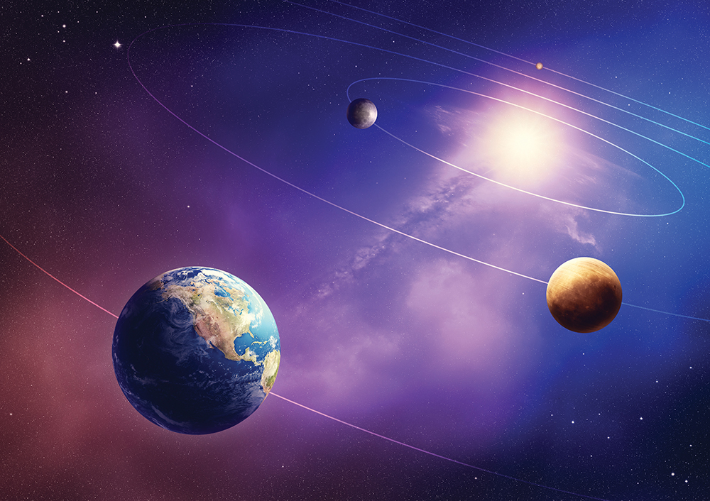 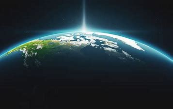Conditions favourable to support life are probably found only on the earth. The earth is neither too hot nor too cold. It has water and air, which are very essential for our survival. The air has life-supporting gases like oxygen. Because of these reasons, the earth is a unique planet in the solar system.
From the outer space, the earth appears blue because its two-thirds surface is covered by water. It is, therefore, called a blue planet.
Our earth has only one satellite, that is, themoon. Its diametre is only one-quarter that on the earth. It appears so big because it is nearer to our planet than other celestial bodies. It is about 3,84,400 km away from us. Now you can compare the distance of the earth from the sun and that from the moon.
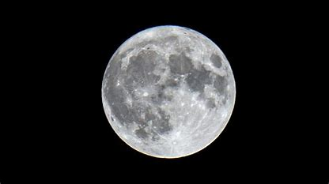The moon moves around the earth in about 27 days. It takes exactly the same time to complete one spin. As a result, only one side of the moon is visible to us on the earth.
Earth is a dynamic system – a combination of interrelated, interdependent or interacting parts forming a collective whole or entity. On a macro level, the Earth system maintains its existence and functions as a whole through the interactions of its parts, called components. At a lower level or micro level, it is helpful to think of the Earth system in terms of four central components known as the subsystems – the hydrosphere, geosphere, atmosphere and biosphere.
Geographers break down the Earth’s systems into four spheres that make up the world’s air (atmosphere), water (hydrosphere), land (geosphere), and living organisms (biosphere).
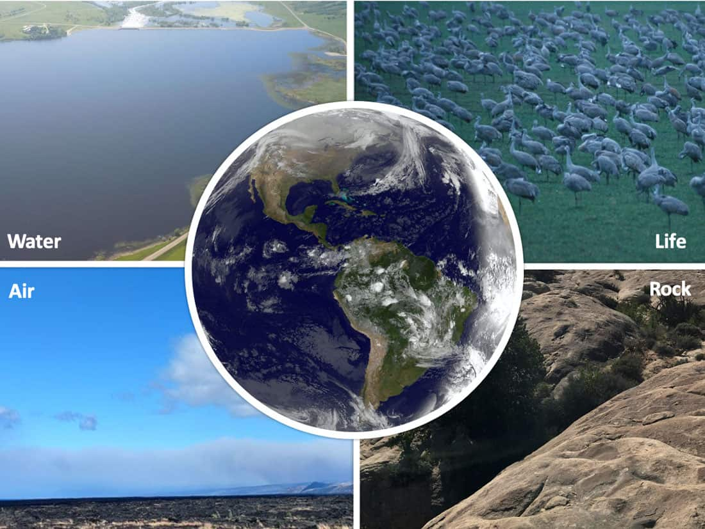Three of these spheres are abiotic and one sphere is biotic. Abiotic describes substances that are made from non-living materials. Biotic relates to living things like bacteria, birds, mammals, insects, and plants.
In this breakdown, all of the Earth’s water is included in the hydrosphere. This includes surface water (such as rivers, lakes, and oceans), water in the ground, ice and snow, and water in the atmosphere in the form of water vapor.
An atmosphere is a blanket of gases that surrounds Earth. It is held near the surface of the planet by Earth’s gravitational attraction. Argon, oxygen and nitrogen from the three main constitutions of the atmosphere.
“Atmosphere is a protective layer of gases that shelters all life on Earth, keeping temperatures within a relatively small range and blocking out harmful rays of sunlight.”
There is no boundary between the atmosphere and outer space. The atmosphere gets less dense and denser until it “blends” into outer space.
The atmosphere has five distinct layers that are determined by the changes in temperature that happen with increasing altitude. Layers of Earth’s atmosphere are divided into five different layers as:
The troposphere is the lowest layer in the atmosphere. It extends upward to about 10kms above sea level starting from ground level. The lowest part of the troposphere is called the boundary layer and the topmost layer is called the tropopause. The troposphere contains 75% of all air in the atmosphere. Most clouds appear in this layer because 99% of the water vapour in the atmosphere is found here. Temperature and air pressure drop as you go higher in the troposphere. When a parcel of air moves upwards it expands. When air expands it cools. Due to this reason, the base of the troposphere is warmer than its base because the air in the surface of the Earth absorbs the sun’s energy, gets heated up and moves upward as a result of which it cools down.
Above the troposphere lies the stratosphere which extends from the top of the troposphere to about 50 km (31 miles) above the ground. The ozone layer lies within the stratosphere. Ozone molecules in this layer absorb high-energy ultraviolet (UV) light from the Sun and convert it into heat. Because of this, unlike the troposphere, the stratosphere gets warmer the higher you go
Above the stratosphere is the mesosphere and it extends to a height of about 85 km (53 miles) from the ground. Here, the temperature grows colder as you rise up through the mesosphere. The coldest parts of our atmosphere are located in this layer and can reach –90°C.
Thermosphere lies above the mesosphere and this is a region where the temperature increases as you go higher up. The temperature increase is caused due to the absorption of energetic ultraviolet and X-Ray radiation from the sun. However, the air in this layer is so thin that it would feel freezing cold to us! Satellites orbit Earth within the thermosphere. Temperatures in the upper thermosphere can range from about 500° C to 2,000° C or higher. The aurora, the Northern Lights and Southern Lights, occur in the thermosphere.
Exosphere is the final frontier of the Earth’s gaseous envelope. The air in the exosphere is constantly but gradually leaking out of the Earth’s atmosphere into outer space. There is no clear cut upper boundary where the exosphere finally fades away into space.
The ionosphere isn’t a distinct layer unlike other layers in the atmosphere. The ionosphere is a series of regions in parts of the mesosphere and thermosphere where high-energy radiation from the Sun has knocked electrons loose from their parent atoms and molecules
The hydrosphere is the combined mass of water found on, under, and above the surface of the earth. It has been estimated that there are 1386 million cubic kilometres of water on earth. This includes water in liquid and frozen forms in groundwater, oceans, lakes and streams approximately 75% of Earth’s surface, an area of some 361 million square kilometres is covered by ocean.
The hydrological cycle transfers water from one state or reservoir to another. Reservoirs include atmospheric moisture including snow, rain and clouds, streams, oceans, rivers lakes, groundwater, subterranean aquifers, polar icecaps and saturated soil.
.png)
The Solar energy is the source of heat and light and gravity causes the transfer from one state to another over periods from hours to thousands of years. Most evaporation comes from the oceans and is returned to the earth as snow or rain.
It consists of all bodies of water, icebergs and water vapour in the earth’s atmosphere. Oceans contain 97 per cent of water in the hydrosphere, while rivers, lakes and other water bodies on land and underground water contains a small percentage of total water in the hydrosphere.
The lithosphere is the rigid, outermost shell on Earth. It is composed of the crust and the portion of the upper mantle that behaves elastically on time scales of thousands of years or greater. The outermost shell of a rocky planet, the crust, is defined on the basis of its chemistry and mineralogy.
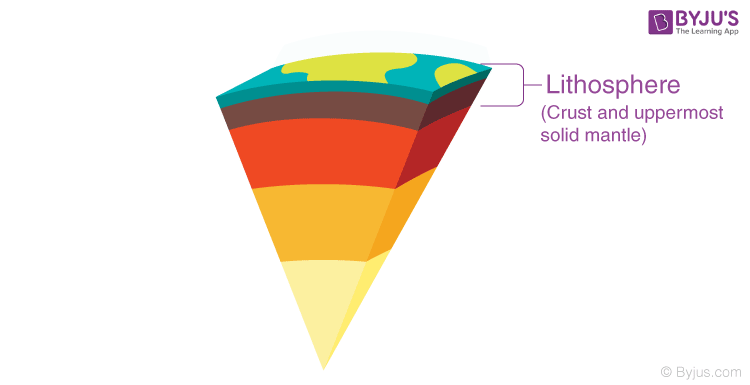This includes the crust and the uppermost mantle, which constitute the hard and rigid outer layer of the Earth. The uppermost part of the lithosphere that chemically reacts to the atmosphere, hydrosphere, and biosphere through the soil-forming process is called the pedosphere.
The earth’s crust is not a homogeneous substance; it has different layers of rocks including sedimentary rocks on top, granitic and metamorphic rocks in the middle, and basaltic rocks on the bottom. The earth’s crust also consists of several large dynamic tectonic plates. These tectonic plates move slowly but continuously at an average rate of around 10 cm. Considering this, there was no Atlantic Ocean, and North America and Europe together were one continent 180 million years ago. The Atlantic Ocean came into being because of the drifting apart from the Eurasian and North America plates.
The biosphere, which includes the ground and the air, is characterized as the region of the planet where organisms live. The biosphere is defined as the region on, above, and below the Earth’s surface where life exists.
The biosphere is a narrow zone on the surface of the earth where soil, water, and air combine to sustain life. Life can only occur in this zone. From fungi and bacteria to large animals, there are several different types of life.
The biosphere is characterized as an area that contains all living organisms and the products of their activities. As a result, it plays a critical role in the maintenance of ecosystems, i.e., the existence of species and their reciprocal interactions. And the biosphere is critical for climate regulation.
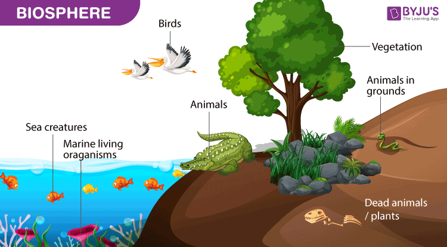The biosphere provides important resources. Many people rely on the biosphere for basic necessities including food, medicine, construction materials, and fuel. Indigenous peoples, in particular. Except for salt, all food comes from the biosphere, but established societies prefer to farm rather than forage.
The biosphere is a relatively thin layer of the Earth’s surface that supports life, reaching from a few kilometers into the atmosphere to deep-sea vents. The biosphere is a global ecosystem made up of living organisms (biota) and the nonliving (abiotic) factors that provide them with energy and nutrients.
The biosphere is a narrow zone on the surface of the earth where soil, water, and air combine to sustain life. Life can only occur in this zone. From fungi and bacteria to large animals, there are several different types of life.
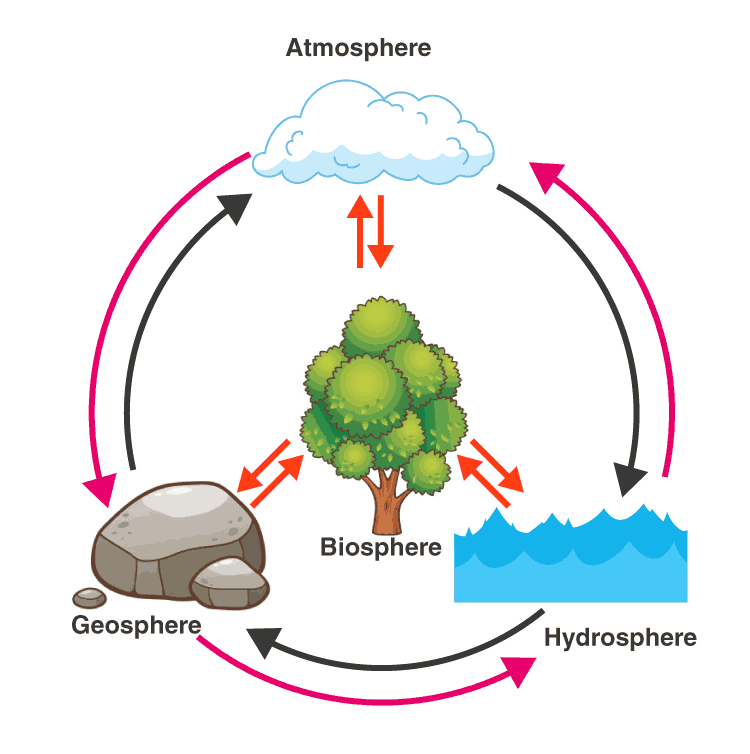The biosphere provides the ecosystem that is needed for survival. Adaptation to the biosphere’s climate is expected for living organisms. Biodiversity thrives within ecosystems, and the biosphere is a reliable source of food on Earth. Biodiversity is just what it sounds like biological variety.
Safe areas for the protection of plants and animals are known as biosphere reserves. It also helps to restore the tribals’ traditional way of life in the region. They protect the region’s biodiversity. The biosphere is the ecological organization’s highest level. It covers all types of life as well as any biome on the earth.
The biosphere functions as the planet’s life support system, assisting in the control of atmospheric composition, soil health, and the hydrological (water) cycle. A indicator of a biome’s contribution to the earth. The biosphere is a narrow zone on the surface of the earth where soil, water, and air combine to sustain life. Life can only occur in this zone.
The geosphere is the outermost layer of the earth, rigid and formed of solid rock which is also known as the crust. Without it, humans would not be able to live on the planet because there would be no solid ground on which they could live. It is in the earth's geosphere that we can find rocks, minerals, molten rock, sand and mountains. These rocks can be of various types such as sedimentary, igneous and metamorphic rocks. The Earth's geosphere is related to the other layers of the earth, including the atmosphere and the hydrosphere. Within it is also the lithosphere and is a layer that is in a constant state of motion.
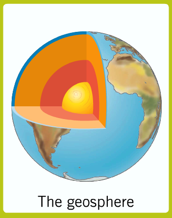It is composed of rocks and minerals, from molten rock to heavy metals. The geosphere also includes all the abiotic parts of the earth and the skeletons of animals that fossilize over time. Rock cycle processes, such as metamorphism, melting and solidification, weathering and erosion, are responsible for the constant recycling of rocks on Earth.
The geosphere is very important for life on earth because it defines much of the environment in which we live, controls the mineral distribution, rocks and soils and generates natural phenomena that, although dangerous, are responsible for shaping the earth. The distribution of the mountains, the position of the continents, the shape of the bottom of the sea and the location of the main rivers and floodplains are largely products of the processes that occur in the geosphere. The distribution of mineral resources, such as oil, coal, metallic minerals, and even sand and gravel, are fundamental to the economic success of most nations.
Earth comprises four separate layers. Most of the geologist believes that as the Earth cooled, the heavier and the denser material sank into the centre, and the lighter ones rose towards the top. Due to this, the outermost layer is made of the lightest materials such as rocks and granites and the innermost layer consists of nickel and iron. Let’s discuss different layers of earth.
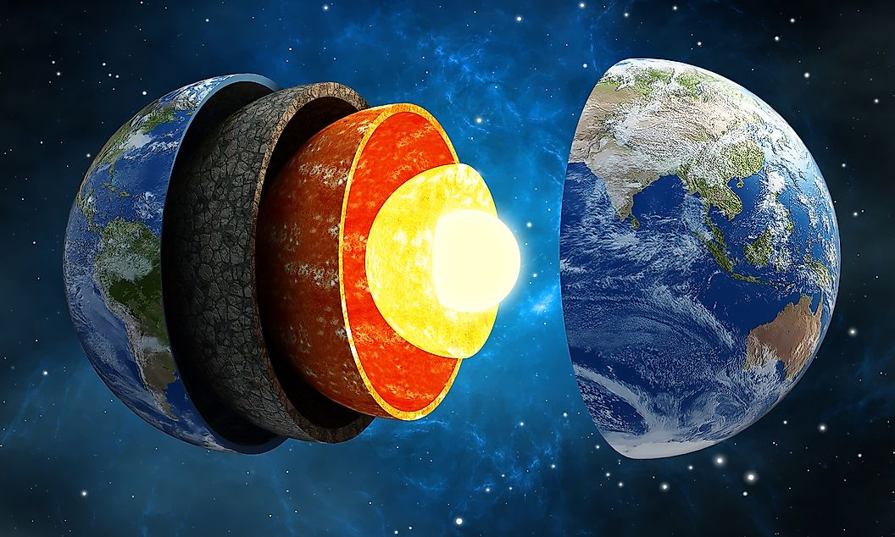The crust of the Earth is the area that is arguably best known by scientists, and certainly the one the general public is the most familiar with, as it is where we live. Human life all exists on the crust of the Earth, as does the rest of known organic life. The crust is the thinnest of the four layers on Earth, and is only 1 percent of the whole Earth. The crust’s thickness ranges in measurement from only 5 to 70 km thick, depending on location.
The crust is the outer layer where we live. The thickness is around 0-60 km. It’s a solid rock layer divided into two types:
The Earth’s crust is also broken up into various pieces, known as tectonic plates, which fit together in a puzzle-like manner to form what is collectively called the crust. These plates, which are large chunks of the crust, are free-floating in/on the liquid lower level known as the mantle. Tectonic plates exist in both oceanic and continental areas, and traverse country and continental borders. There are seven major plates: the Pacific, North American, Eurasian, African, Antarctic, Indo-Australian, and South American and 10 minor plates: Somali, Nazca, Phillipine Sea, Arabian, Caribbean, Cocos, Caroline, Scotia, Burma, and the New Hebrides plates
Mantle is the widest section of the Earth. Its thickness is approximately 2,900 km. The mantle is mainly made up of semi-molten rock known as magma. The rock is hard in the upper part of the mantle, but lower down the rock is softer and begins to melt.
The mantle is located directly under the Sima. The mantle consists of very hot and dense rock. This layer of rock flows like asphalt under heavy weight. This flow is because of the greatest temperature differences from the bottom to the top of the mantle. The reason behind the plates of the Earth move is the movement of the mantle. Its temperature varies between 1600 oF at the upper part to 4000 oF near the bottom.
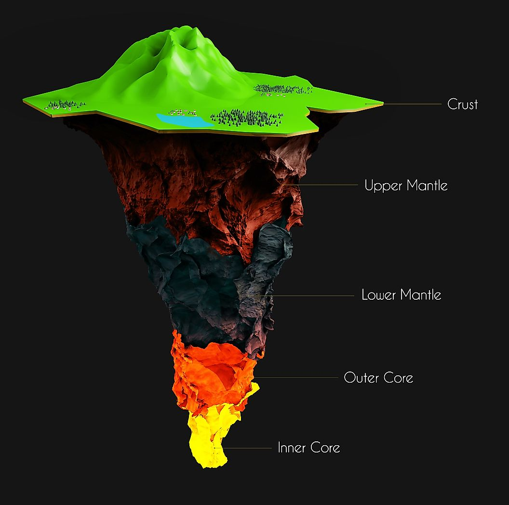As you go deeper into the Earth, temperature and pressure increase. Within the mantle, there is a range of temperature, which rises depending on depth. Nearest the crust, the mantle registers temperatures around 1000° Celsius (1832° Fahrenheit). At its deepest, temperatures can read as high as 3700° Celsius (6692° Fahrenheit).
The outer core of the Earth is similar to a very hot ball of metals, whose temperature is around 4000 oF to 90000F. It is so hot that the metals inside are all in the liquid state. The outer core is located around 1800 miles under the crust and approximately 1400 miles thick. It is composed of metals such as iron and nickel. The outer core surrounds the inner core.
The inner core has pressures and temperatures so high that the metals are squeezed together and not able to move like a liquid, but are forced to vibrate instead of solid.
The outer core is also thought to be the cause of the magnetic field on Earth. It is this field which allows for life to be sustained here, as the field helps form a protective layer around the Earth’s atmosphere, blocking harmful solar winds.
It is the centre and the hottest layer of the Earth. The inner core is solid and made up of iron and nickel with temperature up to 5,500oC. Due to its immense heat energy, the inner core is more like the engine room of the Earth.
The ecosystem is the structural and functional unit of ecology where the living organisms interact with each other and the surrounding environment. In other words, an ecosystem is a chain of interaction between organisms and their environment.
An ecosystem is a community of living organisms in conjunction with the nonliving components of their environment, interacting as a system. These biotic and abiotic components are linked together through nutrient cycles and energy flows. Energy enters the system through photosynthesis and is incorporated into plant tissue. By feeding on plants and on one another, animals play an important role in the movement of matter and energy through the system. They also influence the quantity of plant and microbial biomass present. By breaking down dead organic matter, decomposers release carbon back to the atmosphere and facilitate nutrient cycling by converting nutrients stored in dead biomass back to a form that can be readily used by plants and other microbes.
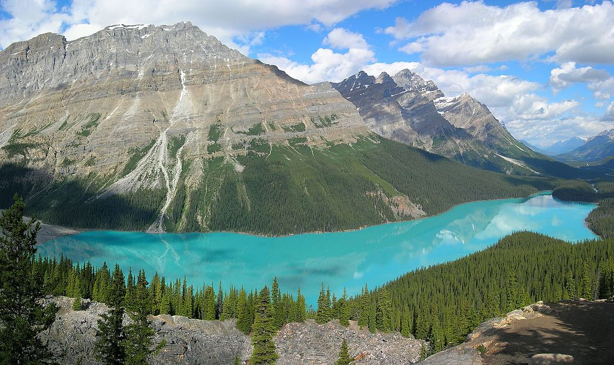 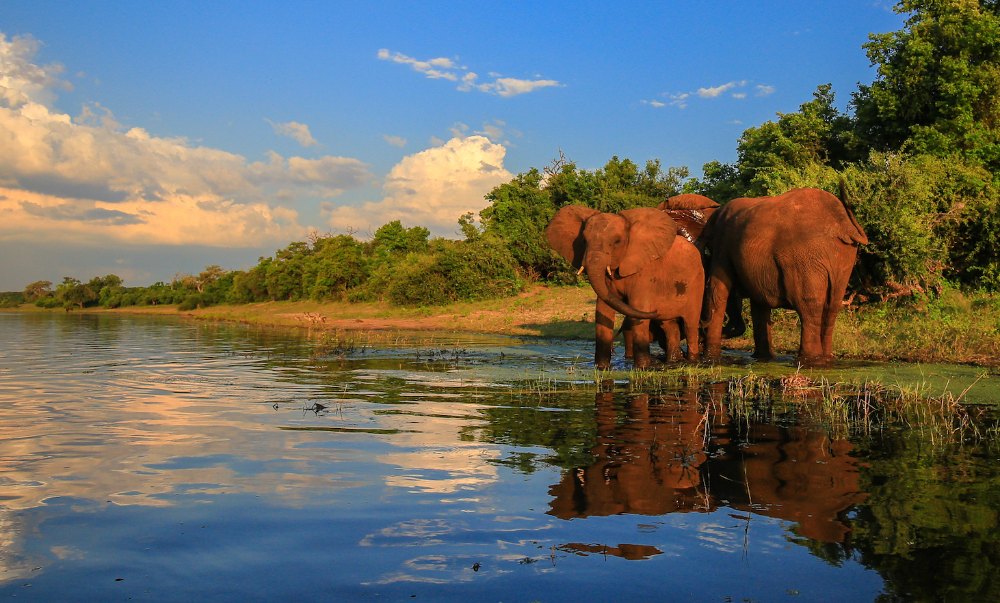Ecosystems are controlled by external and internal factors. External factors such as climate, parent material which forms the soil and topography, control the overall structure of an ecosystem but are not themselves influenced by the ecosystem.[5] Unlike external factors, internal factors are controlled, for example, decomposition, root competition, shading, disturbance, succession, and the types of species present.
An ecosystem can be as small as an oasis in a desert, or as big as an ocean, spanning thousands of miles. There are two types of ecosystem:
Terrestrial ecosystems are exclusively land-based ecosystems. There are different types of terrestrial ecosystems distributed around various geological zones. They are as follows:
A forest ecosystem consists of several plants, animals and microorganisms that live in coordination with the abiotic factors of the environment. Forests help in maintaining the temperature of the earth and are the major carbon sink.
A forest ecosystem is a natural wood land unit that consists of all microorganisms, plants, and animals working together in the area with all other environment’s non-living physical factors. It’s common idea to most individuals that forest is just an assemblage of trees, which is not true they are much more than that.
In a grassland ecosystem, the vegetation is dominated by grasses and herbs. Temperate grasslands, savanna grasslands are some of the examples of grassland ecosystems.
Herbaceous vegetation color characterizes this ecosystem. Grasses or grass-like plants dominate it. Mixtures of grassland and trees appear as Savannah at forests zones or where there’s marginal rainfall for trees. This ecosystem occurs in dry regions that are too dry for forests but have soil water sufficient enough to support closed plant canopy lacking in deserts.
Tundra ecosystems are devoid of trees and are found in cold climates or where rainfall is scarce. These are covered with snow for most of the year. The ecosystem in the Arctic or mountain tops is tundra type.
Deserts are found throughout the world. These are regions with very little rainfall. The days are hot and the nights are cold.
Disregarding the regional area it is easier to find any desert being cold at night and receiving less rainfall, however, these deserts can produce plants that can adapt to such living conditions.
Aquatic ecosystems are ecosystems present in a body of water. These can be further divided into two types, namely:
The freshwater ecosystem is an aquatic ecosystem that includes lakes, ponds, rivers, streams and wetlands. These have no salt content in contrast with the marine ecosystem.
The marine ecosystem includes seas and oceans. These have a more substantial salt content and greater biodiversity in comparison to the freshwater ecosystem.
The structure of an ecosystem is characterised by the organisation of both biotic and abiotic components. This includes the distribution of energy in our environment. It also includes the climatic conditions prevailing in that particular environment.
The structure of an ecosystem can be split into two main components, namely:
The biotic and abiotic components are interrelated in an ecosystem. It is an open system where the energy and components can flow throughout the boundaries.
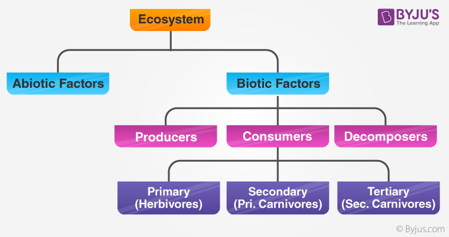Biotic components refer to all life in an ecosystem. Based on nutrition, biotic components can be categorised into autotrophs, heterotrophs and saprotrophs (or decomposers).
Abiotic components are the non-living component of an ecosystem. It includes air, water, soil, minerals, sunlight, temperature, nutrients, wind, altitude, turbidity, etc
The sun is the ultimate source of energy on earth. It provides the energy required for all plant life. The plants utilise this energy for the process of photosynthesis, which is used to synthesise their food.
During this biological process, light energy is converted into chemical energy and is passed on through successive levels. The flow of energy from a producer, to a consumer and eventually, to an apex predator or a detritivore is called the food chain
Dead and decaying matter, along with organic debris, is broken down into its constituents by scavengers. The reducers then absorb these constituents. After gaining the energy, the reducers liberate molecules to the environment, which can be utilised again by the producers
An ecological pyramid is the graphical representation of the number, energy, and biomass of the successive trophic levels of an ecosystem. Charles Elton was the first ecologist to describe the ecological pyramid and its principals in 1927.
The biomass, number, and energy of organisms ranging from the producer level to the consumer level are represented in the form of a pyramid; hence, it is known as the ecological pyramid.
The base of the ecological pyramid comprises the producers, followed by primary and secondary consumers. The tertiary consumers hold the apex. In some food chains, the quaternary consumers are at the very apex of the food chain.
The producers generally outnumber the primary consumers and similarly, the primary consumers outnumber the secondary consumers. And lastly, apex predators also follow the same trend as the other consumers; wherein, their numbers are considerably lower than the secondary consumers.
For example, Grasshoppers feed on crops such as cotton and wheat, which are plentiful. These grasshoppers are then preyed upon by common mice, which are comparatively less in number. The mice are preyed upon by snakes such as cobras. Snakes are ultimately preyed on by apex predators such as the brown snake eagle.
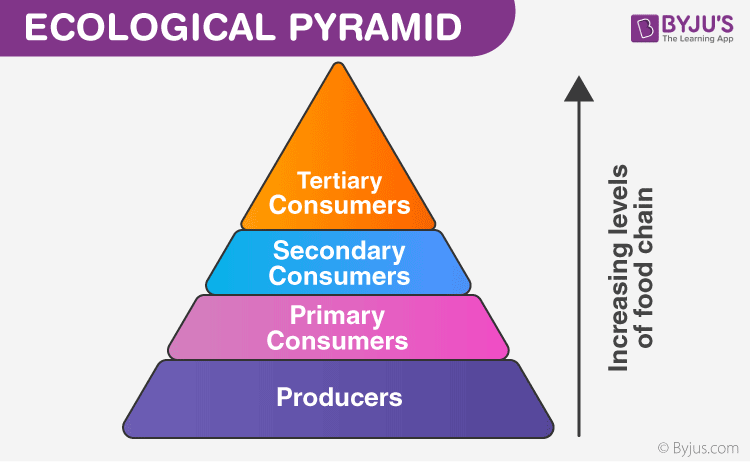Food web is a network of interconnected food chains. It comprises all the food chains within a single ecosystem. It helps in understanding that plants lay the foundation of all the food chains. In a marine environment, phytoplankton forms the primary producer.
The study of food webs is important, as such webs can show how energy flows through an ecosystem. It also helps us understand how toxins and pollutants become concentrated within a particular ecosystem. Examples include mercury bioaccumulation in the Florida Everglades and mercury accumulation in the San Francisco Bay. Food webs can also help us study and explain how the diversity of species is related to how they fit within the overall food dynamic. They may also reveal critical information about the relationships between invasive species and those native to a particular ecosystem.
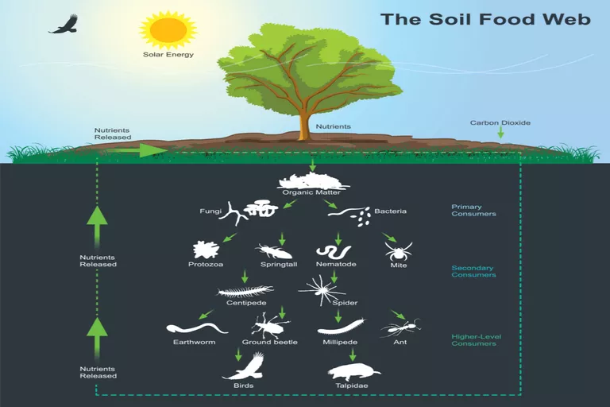In a food web, organisms are arranged according to their trophic level. The trophic level for an organism refers to how it fits within the overall food web and is based on how an organism feeds. Broadly speaking, there are two main designations: autotrophs and heterotrophs. Autotrophs make their own food while heterotrophs do not. Within this broad designation, there are five main trophic levels: primary producers, primary consumers, secondary consumers, tertiary consumers, and apex predators. A food web shows us how these different trophic levels within various food chains interconnect with one another as well as the flow of energy through the trophic levels within an ecosystem.